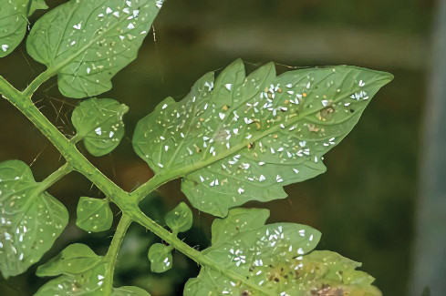
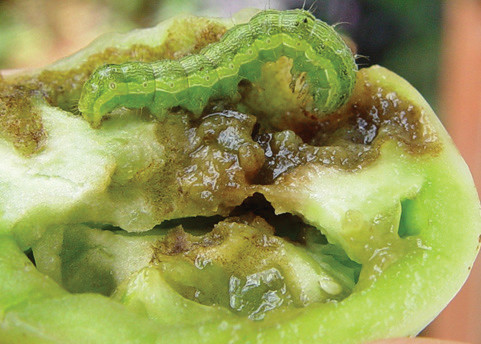
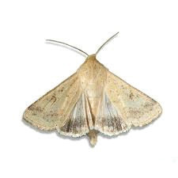
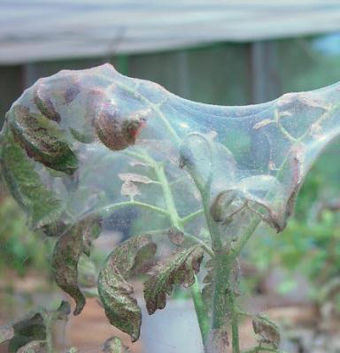

Whiteflies
What they do: Feed on the underside of tomato leaves, causing yellowing wilting and spread of viral diseases.
How to identify them: Look for tiny white insects that you can see on the underside of tomato leaves (refer to Figure 8.7).
How to manage them: Use a kerosene and soap spray, plant resistant cultivars with hairy leaves, encourage natural predators, and rotate crops.

Figure 8.7: Whiteflies on the underside of a tomato leaf
Bollworms
What they do: Larvae and caterpillars feed on tomato leaves and fruits.
How to identify them: Look for the larvae, caterpillars and the damaged leaves and fruits (refer to Figure 8.8).
How to manage them: Apply the recommended insecticides


Figure 8.8: Bollworm fruit damage & an adult moth
Spider mites
What they do: Attack tomatoes, causing white to yellow spots on leaves.
How to know them: Look for tiny white or yellow spots on leaves, check for small, red or orange mites under the leaves, notice if leaves turn yellow and fall off, and a thin white or yellow cobweb-like substance on the plant (refer to Figure 8.9).
How to manage them: Keep the field free from weeds, and use recommended pesticides.

Figure 8.9: Tomato affected by spider mites